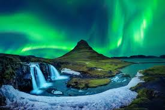
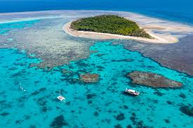

The Grand Canyon, United States

The Grand Canyon is one of the most iconic natural wonders in the world.
Carved by the Colorado River over millions of years,
this massive canyon stretches for over 270 miles and reaches depths of up to a mile.
The sheer size and scale of the Grand Canyon are truly awe-inspiring,
making it a must-see destination for anyone who appreciates the beauty of nature.
The Northern Lights, Iceland

The Northern Lights, also known as the Aurora Borealis,
are a natural light display that can be seen in the night sky near the Arctic and Antarctic regions.
Iceland is one of the best places in the world to witness this magical phenomenon,
with its dark winter nights providing the perfect backdrop for the dancing lights.
The colors and patterns of the Northern Lights are truly mesmerizing,
creating a display that is unlike anything else on Earth.
The Great Barrier Reef, Australia
The Great Barrier Reef is the largest coral reef system in the world,
stretching for over 1,400 miles off the coast of Australia.
This underwater paradise is home to an incredible array of marine life,
including colorful fish, turtles, and sharks.
Snorkeling or diving in the clear blue waters of the Great Barrier Reef is an experience like no other,
allowing you to glimpse the beauty and diversity of this unique ecosystem.